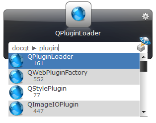
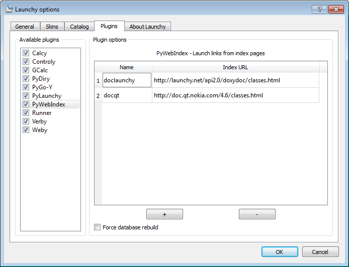

PyWebIndex is a Launchy python plugin that allows quick access to links from index pages.
It is intended for software developers wishing to access automatically generated SDK documentation such as Doxygen, although you might other find forms of use as well.
The plugin is very similar to the Weby plugin from Launchy distribution in it`s interface, but it works differently. Here the main focus is on indexing large pages with lots of links, which are not wanted as bookmarks.
A typical usage might look like this - searching for QT class that has line in it`s name:

The user can define a list of keywords (called “Name”) and associate them with index pages (called “Index URL”). Later on, user can access each of the links from the index pages by using the defined keyboard.
For example, the following pages might be used with this plugin:
The plugin indexes the links in advance, meaning you should have fast access when they are needed.
PyWebIndex requires the following:
There are two ways to install:
For example, try to add the following:
An example of the settings dialog:
